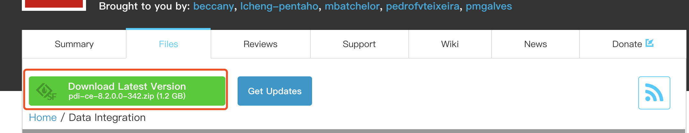
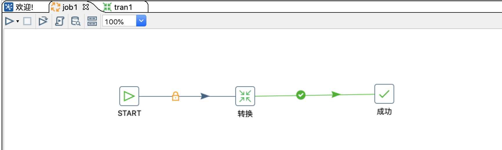
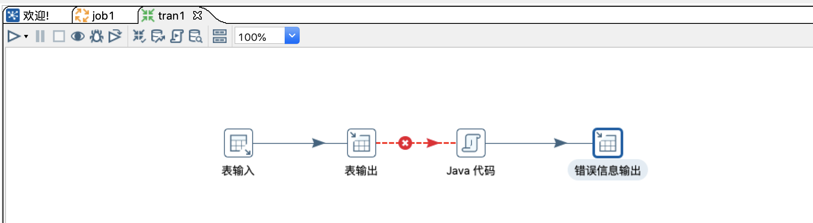
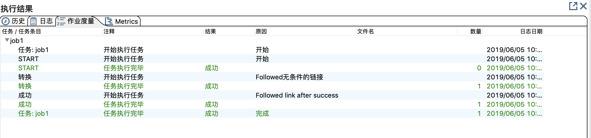

# 快速开始
此处简单介绍一个Kettle流程能完成的工作，对于详细的操作，将会再其他章节介绍。如果你对Kettle对基本概念不感兴趣或者你已经对Kettle比较熟悉， 现在仅需要参考Kettle中各个步骤的使用，可以直接跳到转换步骤.
# 下载
注意：kettle是免安装的，所以下载解压即可以使用，以下为下载解压的过程。需要注意的是，kettle使用Java开发，所以需要提前安装好Java环境， 这里不会去说明Java环境的安装方法，不熟悉的朋友可以自行百度或谷歌。
可以通过官网下载地址 下载需要的版本。
在官方的下载界面，可以通过点击
Download Latest Version来下载最新版，如下图所示。 如果你需要其他的历史版本，也可以在界面上的版本列表中选择需要的版本来下载。

Kettle下载完成以后，直接解压，会出现一个
data-integration目录，该目录就是Kettle工具的根目录。
# Kettle目录
由于Kettle目录文件比较多，这里仅对一、二级目录对内容做简要介绍，其中部分目录文件未做显示。
.
├── Carte.bat
├── Data\ Integration.app
│ ├── Contents
│ └── Icon_
├── Data\ Service\ JDBC\ Driver
│ └── pdi-dataservice-driver-bundle-7.1.0.0-12.zip
├── Encr.bat
├── Import.bat
├── Kitchen.bat
├── LICENSE.txt
├── Pan.bat
├── PentahoDataIntegration_OSS_Licenses.html
├── README.txt
├── Spark-app-builder.bat
├── Spoon.bat
├── SpoonConsole.bat
├── SpoonDebug.bat
├── SpoonDebug.sh
├── adaptive-execution
│ ├── bin
│ ├── data
│ ├── deploy
│ ├── etc
│ ├── jaas
│ ├── keytab
│ ├── lib
│ ├── pdi-daemon
│ ├── setenv
│ └── system
├── carte.sh
├── classes
│ ├── kettle-lifecycle-listeners.xml
│ ├── kettle-registry-extensions.xml
│ ├── log4j.xml
│ └── mondrian.properties
├── docs
│ ├── English
│ └── README.txt
├── encr.sh
├── hs_err_pid13093.log
├── hs_err_pid6224.log
├── hs_err_pid6567.log
├── import-rules.xml
├── import.sh
├── kitchen.sh
├── launcher
│ ├── kettle.cfg.xml
│ ├── launcher.properties
│ └── pentaho-application-launcher-7.1.0.0-12.jar
├── lib
│
├── libswt
│ ├── linux
│ ├── osx64
│ ├── win32
│ └── win64
├── logs
│ └── spoon.log
├── pan.sh
├── plugins
│ ├── VerticaBulkLoader
│ ├── elasticsearch-bulk-insert-plugin
│ ├── elasticsearch-bulk-insert-plugin.zip
│ ├── platform-utils-plugin
│ └── teradata-tpt-bulk-loader
├── purge-utility.bat
├── purge-utility.sh
├── pwd
│ ├── carte-config-8081.xml
│ ├── carte-config-8082.xml
│ ├── carte-config-8083.xml
│ ├── carte-config-8084.xml
│ ├── carte-config-master-8080.xml
│ └── kettle.pwd
├── runSamples.bat
├── runSamples.sh
├── samples
│ ├── db
│ ├── jobs
│ └── transformations
├── set-pentaho-env.bat
├── set-pentaho-env.sh
├── simple-jndi
│ └── jdbc.properties
├── spark-app-builder.sh
├── spoon.command
├── spoon.ico
├── spoon.png
├── spoon.sh
├── system
│ ├── karaf
│ ├── mondrian
│ └── osgi
├── ui
│ ├── browser-toolbar.xul
│ ├── images
│ ├── import-rules-toolbar.xul
│ ├── job-graph.xul
│ ├── job-history-toolbar.xul
│ ├── job-log-toolbar.xul
│ ├── laf.properties
│ ├── main_perspective_overlay.xul
│ ├── menubar.xul
│ ├── spoon.xul
│ ├── trans-grid-toolbar.xul
│ ├── trans-history-toolbar.xul
│ ├── trans-log-toolbar.xul
│ ├── trans-preview-toolbar.xul
│ └── trans-toolbar.xul
└── yarn.sh
- 以上为kettle7.1 版本完整的一级目录以及目录下的文件(lib、plugins目录部分文件未显示)，此处选择部分常用的目录/文件进行介绍。
- 目录
- lib目录，顾名思义，lib目录下存放kettle运行时所需要的依赖库，比如需要连接数据库的JDBC驱动、自己打包的Jar文件等
- plugins目录，此目录用于存放kettle插件，比如需要连接ES和ES进行数据交换的插件、Kafka消费者插件等，也可以自己开发所需的插件， 放置在此目录下。了解如何开发自定义插件
- 文件
spoon.sh、spoon.bat分别用于在不同的系统启动图形化界面，当使用Linux或者Mac系统时，可以执行spoon.sh来启动， 在Windows操作系统则需要双击spoon.bat文件来启动
- 待完善
# 源码
kettle目前已经在Github上开源，如有需要更加深入的学习了解，建议查看源码进行学习。
# 国际惯例，第一个Kettle作业
- 下面是一个Kettle作业，其中包括一个
start一个成功,和一个转换共三个组件,一般情况下，作业都是由start组件开始，成功或success组件结束；而实际对数据的处理，则是在作业中调用的转换来完成的。

下面是一个Kettle的转换，在Kettle中，转换用于实际的数据处理，各个组件并发独立运行，在启动转换的后，相当于每一个子步骤都是开启的单独的监听， 监听从上一步通过
跳传来的数据，处理完以后，在通过跳传递到下一个步骤，直至所有步骤监听不到数据流，则转换停止。在下面这个转换中，共有
表输入、表输出、Java代码（Kettle里面的java脚本）、错误信息输出四个子步骤；每个步骤完成如下所述的任务：- 表输入：负责从A表加载数据
- 表输出：负责获取表输入传递的数据，输出到Mysql的B表中。
- Java代码：负责处理错误信息，Java代码与表输出之间的连接
跳执行条件为"当上一步执行结果为假时",也就是说，当表输出出现错误时，会将错误的信息 传给下一步，Java脚本获取到错误数据，进行自定义的处理以后，将错误信息传递到下一步：错误信息输出。 - 错误信息输出：负责获取Java脚本传递过来的错误信息，然后存到数据库中。

- 现在在作业中启动，执行结果如下图,则表示作业运行成功。
